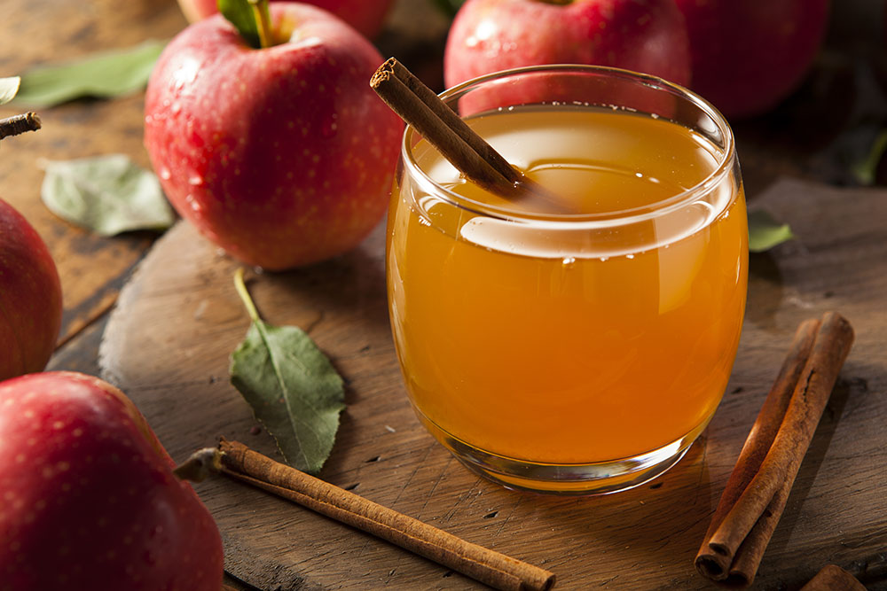

Enjoy the Beauty of Fall


Fall is a magical season with colorful leaves, crisp air, and pumpkin spice everything. Nature transforms into a breathtaking canvas of reds, oranges, and yellows, inviting us to take long walks and crunch through the fallen foliage. Fall vibes inspire a sense of reflection, a time to gather with loved ones, and the promise of holidays just around the corner.
Fall Favorites
Warm up with a cup of Hot Cider and savor the flavors of autumn with Apple Doughnuts and Pumpkin Pie.These autumn delights transport us to a world of rustic charm, where every bite and sip becomes a cherished memory of fall's heartwarming vibes.